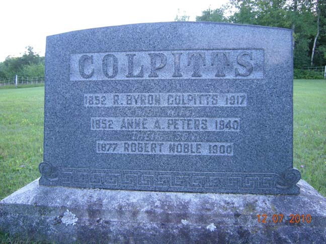
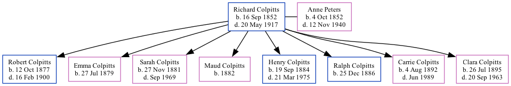

Richard Byron Colpitts 1852 - 1917
[ Home ] | [ Calendar ] | [ Surnames Index ] | [ Family History ]Richard Colpitts, the husband of Anne Atkinson Peters (the second cousin three-times-removed on the father's side of Nigel Horne), was born in New Brunswick, Canada on Sep 16, 18521,2,3,4,5,6,7 and married Anne (with whom he had 8 children: Robert Noble, Emma Alverda, Sarah Rowena Maude, Maud, Henry Jones, Ralph Watson, Carrie Eliza Ida and Clara Agnes) in New Brunswick on Nov 21, 1876.
Richard spent all of his life in New Brunswick, Canada. Throughout his life, he lived in Elgin, Albert, New Brunswick in 18611, in 18712, in 18913 and in 19014; and in Westmorland, New Brunswick in 19118.
He died on May 20, 1917 in New Brunswick7 and was buried in Pleasant Vale, Albert, New Brunswick after May 20, 19177.
Children
- Robert Noble was born on Oct 12, 1877
- Emma Alverda was born on Jul 27, 1879
- Sarah Rowena Maude was born on Nov 27, 1881
- Maud was born in 1882
- Henry Jones was born on Sep 19, 1884
- Ralph Watson was born on Dec 25, 1886
- Carrie Eliza Ida was born on Aug 4, 1892
- Clara Agnes was born on Jul 26, 1895
Citations
- 1861 Census of Canada Ancestry.com Operations Inc (Relation to Head of House: Son)
- 1871 Census of Canada Ancestry.com Operations Inc
- 1891 Census of Canada Ancestry.com Operations Inc (Marital Status: Married; Relation to Head of House: Head)
- 1901 Census of Canada Ancestry.com Operations Inc (Marital Status: Married; Relation to Head of House: Head)
- Canada Census 1871 - Findmypast
- Canada Census 1911 - Findmypast
- Canada, Find A Grave Index, 1600s-Current Ancestry.com Operations, Inc.
- 1911 Census of Canada Online publication - Provo, UT, USA: Ancestry.com Operations Inc, 2006. .Original data - Library and Archives Canada. Census of Canada, 1911. Ottawa, Ontario, Canada: Library and Archives Canada, 2007. http://www.collectionscanada.gc.ca/databases/census-19
- Canada Census 1901 - Findmypast (was the head of the household)
Media
Collpitts - headstone

Canada Census 1911 Transcription - CAN-CENSUS-1911-01528101
Canada Census 1901 - CAN/CENSUS/1901/00422877
Canada Census 1871 - CAN/CENSUS/1871/00272841
Family Tree
Generated by Ged2Site. Last updated on Jul 20, 2025